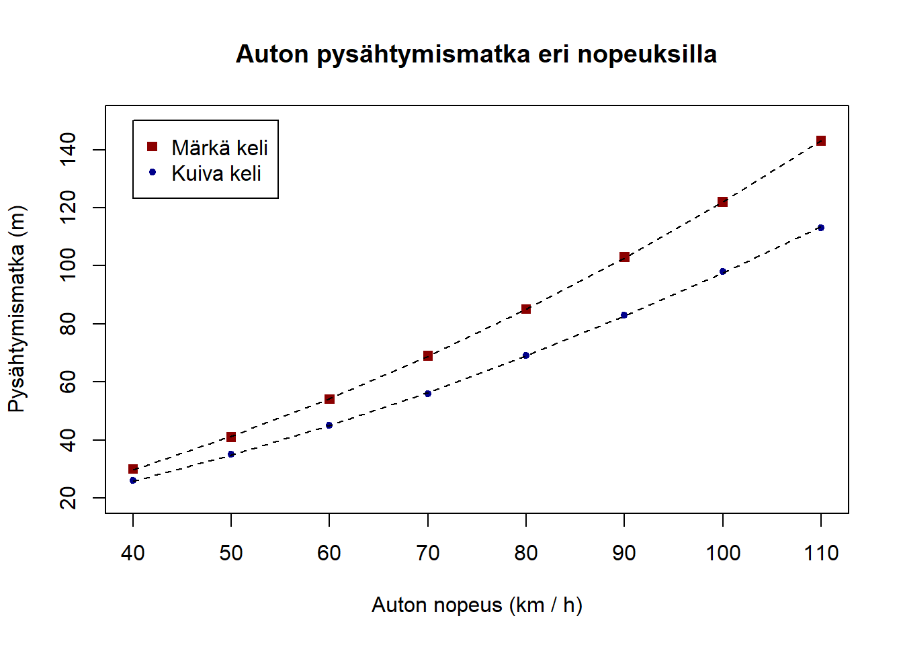
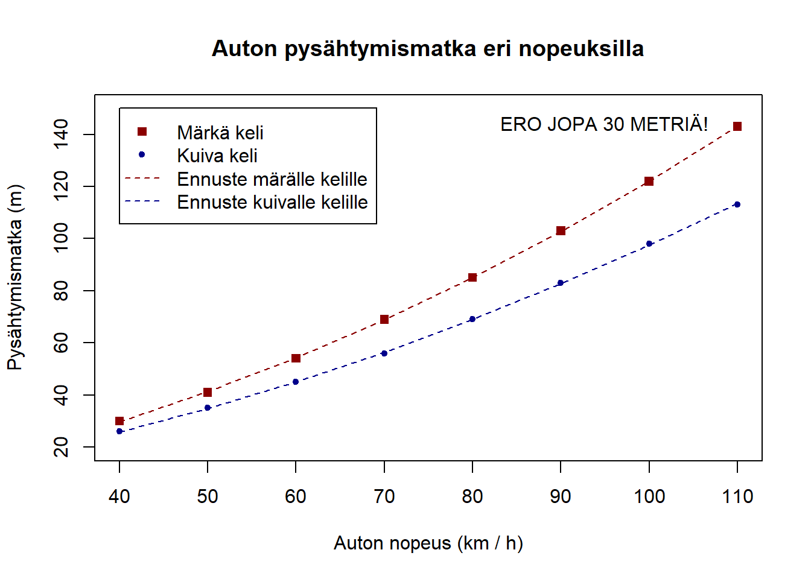

Kappale 10 Lineaariset mallit
Lineaarisessa mallissa eli lineaarisessa regressiossa tavoite on arvioida vastemuuttujan lineaarista riippuvuutta selittävistä muuttujista. Käytetään esimerkkinä R:n sisäistä datasettiä cars, jossa on kirjattu 50 auton nopeus ja pysähtymismatka. Tavoitteena on tutkia, miten auton pysähtymismatka riippuu auton nopeudesta.
10.1 Teoria
Yksinkertaisin mahdollinen lineaarinen regressiomalli näyttää tältä:
\[y = \beta_0 + \beta_1 x_1 + \epsilon\]
- \(y\) on vastemuuttuja, tässä auton pysähtymismatka
- \(\beta_0\) on ns. vakiotermi eli käyrän y-akselin leikkauskohta
- \(\beta_1\) on selittävän muuttujan eli auton nopeuden regressiokerroin
- \(x_1\) on selittävä muuttuja eli auton nopeus
- \(\epsilon\) on residuaalitermi (virhetermi)
Mallissa siis oletetaan, että auton pysähtymismatka nopeudella 0 km/h on \(\beta_0\) ja kasvaa \(\beta_1\) verran, kun nopeus kasvaa 1 km/h. Lisäksi mukana on virhetermi, joka selittää satunnaisen vaihtelun tuloksissa lineaarisen käyrän ympärillä.
Jos malliin halutaan lisätä selittäviä muuttujia, kuten auton jarrujen kunto (\(x_2\)) tai sääolosuhteet (\(x_3\)), malli näyttää tältä:
\[y = \beta_0 + \beta_1 x_1 + \beta_2 x_2 + \beta_3 x_3 + ... + \epsilon\]
Eli jokaiselle selittävälle muuttujalle annetaan oma regressiokerroin.
10.2 Esimerkki
Muutetaan ensin cars-datasetin muuttujat meille tuttuihin yksikköihin, ja piirretään hajontakuvio havainnoista:
# Change units
cars$speed <- cars$speed * 1.60934
cars$dist <- cars$dist * 0.0254
# Scatter plot
plot(cars$speed, cars$dist,
xlab = "Speed (km/h)", ylab = "Distance (m)",
main = "Stopping distances of cars") 
Autojen välillä on eroja, mutta kuten voi odottaa, suuremmilla nopeuksilla auton pysähtymismatka kasvaa. Käytetään seuraavaksi R:n funktiota lm(), jolla voidaan sovittaa dataan lineaarinen malli:
model <- lm(dist ~ speed, data = cars)
model$coefficients## (Intercept) speed
## -0.44650901 0.06206469lm()-funktiolle annetaan ensimmäiseksi argumentiksi lineaarisen mallin kaava, jossa ~ korvaa yllä nähdyn yhtäkuin-merkin. HUOM: vakiotermi on automaattisesti mukana, eli sitä ei tarvitse kirjata erikseen. Lisäksi täytyy antaa data frame, josta kaavassa näkyvät muuttujat löytyvät.
Lineaarisesta mallista saadaan irti paljon tietoa, tärkeimpinä mallin kertoimet (coefficients). Yllä olevista kertoimista voidaan päätellä, että kun auton nopeus nousee 1 km/h, autojen pysähtymismatka kasvaa noin 0.06 m ja odotettu kasvukäyrä leikkaa y-akselin -0.4 m kohdalla. Voimme piirtää tämän käyrän kuvaajaan abline()-funktion avulla, antamalla sille mallin kertoimet:
plot(cars$speed, cars$dist,
xlab = "Speed (km/h)", ylab = "Distance (m)",
main = "Stopping distances of cars")
abline(a = model$coefficients[1], b = model$coefficients[2])
10.3 Tarkempia tietoja mallista
Muihin mallin tietoihin pääsee käsiksi summary-funktion avulla, joko tulostamalla tuloksen konsoliin, tai sijoittamalla sen muuttujaan, josta voi etsiä mallin tietoja.
# Print summary information
summary(model)##
## Call:
## lm(formula = dist ~ speed, data = cars)
##
## Residuals:
## Min 1Q Median 3Q Max
## -0.73835 -0.24194 -0.05771 0.23405 1.09731
##
## Coefficients:
## Estimate Std. Error t value Pr(>|t|)
## (Intercept) -0.446509 0.171664 -2.601 0.0123 *
## speed 0.062065 0.006558 9.464 1.49e-12 ***
## ---
## Signif. codes: 0 '***' 0.001 '**' 0.01 '*' 0.05 '.' 0.1 ' ' 1
##
## Residual standard error: 0.3906 on 48 degrees of freedom
## Multiple R-squared: 0.6511, Adjusted R-squared: 0.6438
## F-statistic: 89.57 on 1 and 48 DF, p-value: 1.49e-12# Save summary and access specific information
s <- summary(model)
s$r.squared## [1] 0.6510794summary() kertoo mm. kertoimien arvojen lisäksi niiden saamat p-arvot kohdassa (Pr > |t|), sekä mallin selitysasteen (merkintätapa johtuu siitä, että p-arvot tulevat t-testeistä). Tässä tapauksessa muuttujan speed p-arvo on hyvin pieni, joten voimme todeta suurella varmuudella, että autojen pysähtymismatka riippuu (lineaarisesti) auton nopeudesta. R2 eli R-squared kertoo, kuinka suuren osuuden pysähtymismatkojen varianssista auton nopeus selittää.
10.4 Ennustaminen
Kun lineaarinen malli on luotu, sen perusteella voidaan myös ennustaa arvoja uusille havainnoille. Tämä tapahtuu predict()-komennolla, jolle annetaan malli, sekä uuden datan sisältävä data frame. Ennustetaan edellisen mallin perusteella pysähtymismatka autolle neljällä uudella nopeudella ja lisätään ne edelliseen kuvaajaan punaisilla rukseilla:
# Create data frame with new speed values
new_data <- data.frame(speed = c(25, 15, 38))
# Create dist column by predicting from linear model
new_data$dist <- predict(model, newdata = new_data)
# Add points to previous plot
plot(cars$speed, cars$dist,
xlab = "Speed (km/h)", ylab = "Distance (m)",
main = "Stopping distances of cars")
abline(a = model$coefficients[1], b = model$coefficients[2])
points(new_data$speed, new_data$dist, pch = 4, col = "red")
Kuten huomataan, ennustetut arvot ovat täsmälleen käyrän päällä.
10.5 Korrelaatio
Korrelaatio on lineaarisen regression ohella tapa mitata kahden muuttujan välistä riippuvuutta. Korrelaatiolle on monia erilaisia mittareita, joista yleisimmät ovat Pearsonin korrelaatiokerroin, joka mittaa kahden muuttujan välistä lineaarista riippuvuutta ja Spearmanin järjestyskorrelaatiokerroin, joka mittaa kahden muuttujan välistä riippuvuutta ilman lineaarisuusoletusta. HUOM: korrelaatio ei ota kantaa siihen, kuinka vahva riippuvuus on (käyrän jyrkkyys), vaan pelkästään siihen, kuinka systemaattinen riippuvuus on. Kummatkin korrelaatiokertoimet saavat arvoja väliltä [-1, 1], jossa -1 on täydellinen negatiivinen korrelaatio (toisen muuttujan kasvaessa toinen pienenee) ja 1 on täydellinen positiivinen korrelaatio.
Korrelaation kahden vektorin välillä voi R:ssä laskea komennolla cor(). Otetaan esimerkiksi R:n sisäinen datasetti Indometh, jossa on mitattu indometasiinin farmakokinetiikkaa, ja selvitetään ajan ja indometasiinin konsentraation väliselle riippuvuudelle Pearsonin ja Spearmanin korrelaatiokertoimet. Piirretään sen jälkeen hajontakuvio mittaustuloksista ja lisätään kuvaajaan alaotsikoksi korrelaatiokertoimet. Tutustumme samalla funktioon round(), jolla voi pyöristää lukuja halutulle desimaalitarkkuudelle.
# Pearson correlation
pearson <- cor(Indometh$time, Indometh$conc, method = "pearson")
# Spearman correlation
spearman <- cor(Indometh$time, Indometh$conc, method = "spearman")
# Scatter plot
plot(Indometh$time, Indometh$conc,
xlab = "Time", ylab = "Concetration",
main = "Pharmacokinetics of indometacin")
# Paste concatenates strings
subtitle <- paste("Pearson correlation:", round(pearson, digits = 2),
"Spearman correlation:", round(spearman, digits = 2))
# Add subtitle to plot
mtext(subtitle)
Tässä esimerkissä nähdään hyvin Pearsonin - ja Spearmanin korrelaatiokertoimien ero. Koska Indometasiinin konsentraatio laskee eksponentiaalisesti, ei lineaarisesti, Pearsonin korrelaatiokerroin on “vain” -0.7, kun taas Spearmanin korrelaatiokerroin -0.97 vastaa lähes täydellistä negatiivista korrelaatiota.